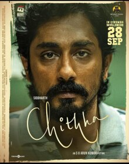

Chittha Movie Review: Best Tamil Film of the Year

Rating:⭐⭐⭐⭐⭐
Is this the best Tamil film of 2023? Absolutely. The film focuses on the idea of human trafficking
and why it is severe. This could very well be Siddarths best film in his career after Jigarthanda.
The songs were excellent. I have been absolutely vibing to Kangal Edho and Unnakku Dhaan 24/7. The child
actress for Chittha, absolutely nailed her role. Whoever the heroine, is, you definitely put out the best performance
unlike other heroines. She was also in Jigarthanda Double X, and both films were her career best films. The film can
be disturbing for a few, due to its sensitive topic. But overall, this is a Kollywood winner.